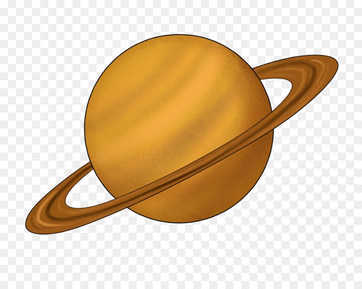

Saturno es el sexto planeta del sistema solar contando desde el Sol, el segundo en tamaño y masa después de Júpiter y el único con un sistema de anillos visible desde la Tierra. Su nombre proviene del dios romano Saturno. Forma parte de los denominados planetas exteriores o gaseosos. El aspecto más característico de Saturno son sus brillantes anillos. Antes de la invención del telescopio, Saturno era el más lejano de los planetas conocidos y, a simple vista, no parecía luminoso ni interesante. El primero en observar los anillos fue Galileo en 1610,1 pero la baja inclinación de los anillos y la baja resolución de su telescopio le hicieron pensar en un principio que se trataba de grandes lunas. Christiaan Huygens, con mejores medios de observación, pudo en 1659 observar con claridad los anillos. James Clerk Maxwell, en 1859, demostró matemáticamente que los anillos no podían ser un único objeto sólido sino que debían ser la agrupación de millones de partículas de menor tamaño. Las partículas que componen los anillos de Saturno giran a una velocidad de 48 000 km/h, 15 veces más rápido que una bala
Haz click aquí si deseas volver a la página principal.
© 2021 Humberto Alejandro Ortega Alcocer - 2CV14 - ESCOM, IPN